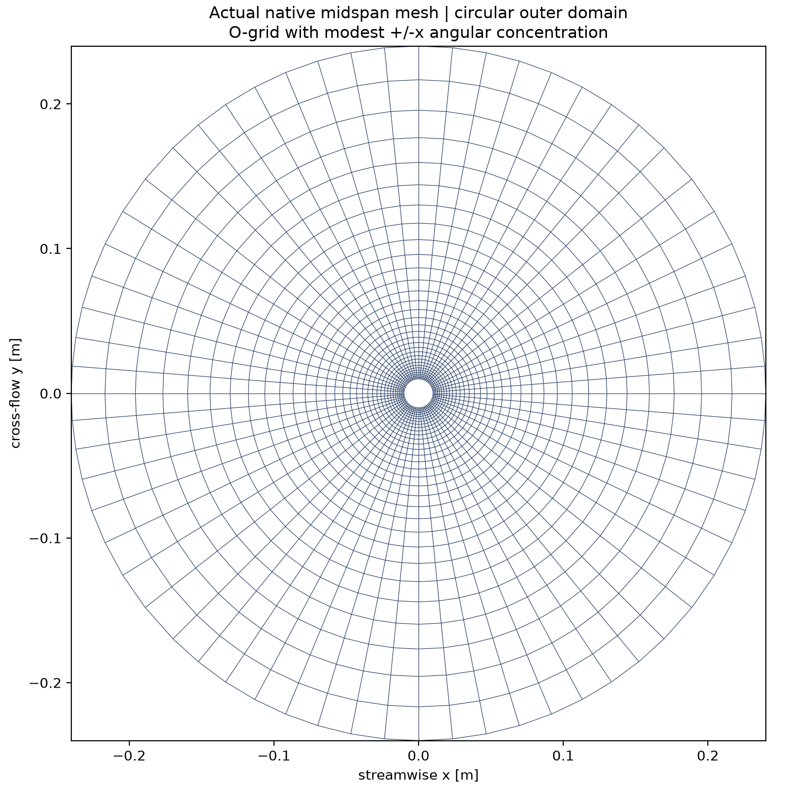
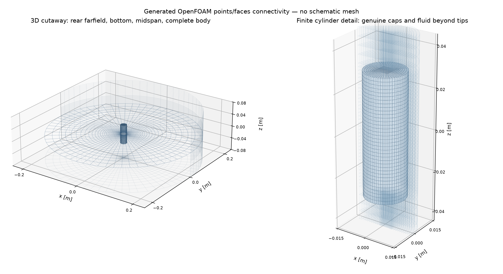
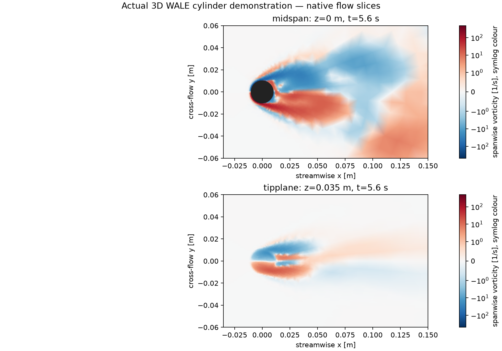

FLUID MOTION → SURFACE LOADING → RADIATED SOUND
How a quiet shape
makes a pressure wave.
Follow the sound from a circular cylinder, one physical idea at a time. Change the source, move the observer, and learn what an acoustic analogy actually predicts.
A small, transparent demonstration.
No invented CFD. No implied validation.
THE EXECUTED CIRCULAR DOMAIN
First, see the actual flow.
A centered finite cylinder inside a circular outer boundary of radius 0.24 m. The 138,240-cell mesh passed OpenFOAM's topology and geometry checks. These images come from native mesh connectivity and sampled LES fields—not from the analytical wave animation.

Inspect the real capped 3D cylinder and surrounding fluid


What this run teaches.
The later force record has a broad lift-spectrum candidate around 1.45 Hz (St ≈ 0.145). The Welch bin spacing is 0.72 Hz, so this short record supports a demonstration of oscillatory loading—not a precise shedding-frequency benchmark.
At a 1 m observer, kr ≈ 0.006 at that candidate frequency: the compact dipole's reactive term matters strongly. A receiver far from the body is not necessarily in the acoustic radiation far field.
01 / READ THE SOURCE
Shape tells you where to listen.
A source family describes how pressure changes with direction—not what geometry a body looks like. Start with a dipole. Turn the observer to 90° and find its ideal null.
Independent normalized models · not cylinder predictions
This field lab holds the on-axis radiating amplitude fixed at unit range as frequency changes. The force lesson below instead holds force amplitude fixed. Neither is a calibrated cylinder sound level.
The angular fingerprint
Radius = |directivity|. Observer ray is shown separately; pressure changes sign across dipole lobes.
A wave, not a wake
Ideal point-source pressure in a plane. The blank central disk excludes the singular point model.
Teal and rust are opposite pressure signs. This square plotting window is not the CFD outer boundary, mesh, or a flow slice. Animation time is deliberately slowed.
What do the starred units mean?
Choose an arbitrary length ℓ. Then r* = r/ℓ, t* = c₀t/ℓ, and f* = fℓ/c₀. Pressure p* uses an independent arbitrary scale. No value in this lab is calibrated to the cylinder. Far-field amplitudes are matched across families to compare shape, not source efficiency. Frequency here is not a measured shedding frequency.
Three families.
Three different mechanisms.
A monopole changes volume. The canonical lesson is a small pulsating sphere: its volume velocity Q drives p = ρ₀Q̇(t − r/c₀)/(4πr). The sphere is a teaching model, not the fixed cylinder.
A dipole applies a force. Two opposite-sign lobes follow the force direction. For this analytical plot the dipole axis is +x; rotating an actual force rotates its pattern. Lift on the cylinder points along y.
A quadrupole has tensor structure. Our four-lobe example uses nᵢTᵢⱼnⱼ ∝ cos(2θ), with an illustrative trace-free tensor T = diag(1, −1, 0). Other tensors and viewing planes give other patterns. It is not a computed quadrupole decomposition.
02 / FLOW BECOMES SOUND
A force is not yet a sound.
Vorticity changes the pressure over the cylinder. Integrating surface traction gives an unsteady force. In the compact, radiating-field limit, its time derivative makes loading noise.
Differentiate the loading
Prescribed unit sine force; not an LES force history. Change the frequency in the lab above.
Fast changes radiate.
A steady force can be large and still have zero derivative. For a sinusoid with fixed force amplitude, doubling frequency doubles the compact far-field pressure amplitude.
This is a low-Mach, acoustically compact, free-space limit. A force-on-body convention reverses the sign. The actual native convention belongs in the evidence, not in an assumed phase adjustment.
LES does the source work: resolving evolving three-dimensional flow supplies loading history. A subgrid model does not itself create inlet turbulence, and a running solver is not proof of developed shedding or mesh adequacy.
The monopole that this cylinder is not
An ideal compact pulsating sphere: prescribed volume velocity Q* and its derivative. This is a different physical source.
At a fixed unit range the far-field pressure is proportional to Q̇. The plotted derivative uses normalized, independent units.
Thickness is about motion.
A stationary, rigid, impermeable cylinder has no moving-surface volume displacement: its thickness monopole is zero. Unsteady surface loading can remain nonzero.
Q = dV/dt
Zero thickness does not mean zero quadrupoles. Turbulent volume stresses are a different source mechanism. The native surface library omits volume quadrupoles; this site does not claim they have been evaluated and found absent.
Check your intuition
The cylinder is fixed. Can its acoustic loading dipole still fluctuate?
Choose an answer, then distinguish loading from thickness.
03 / TIME & DISTANCE
The observer hears the past.
Propagation changes arrival time and amplitude. Both matter. A near-field pressure fluctuation is not automatically a freely radiating acoustic wave.
Wait for the wavefront
A causal, smoothly started tone. The selected source family, observer angle, frequency and range all affect this received signal.
Retarded time is source time.
p*far(t*) = D(θ) s*(t* − r*) / r*
Before the first arrival, the receiver cannot hear the new source. No circular time shift is allowed. Move the range slider: the arrival moves right and the radiating amplitude falls.
A finite native history has a beginning and an end. Early receiver rows can lack source prehistory; late source emissions may not arrive before sampling stops. Arrival-complete samples must be identified before computing a spectrum.
Two different range laws
Harmonic dipole amplitudes on axis. Logarithmic axes expose 1/r and 1/r² slopes; these are not CFD pressures.
Double range; halve far pressure.
A spherical wave spreads energy over an area proportional to r². Its far-field pressure amplitude therefore falls as 1/r, not 1/r². Doubling range reduces its level by about 6 dB.
The compact dipole also has a reactive 1/r² term. It is in quadrature with the radiating term for a harmonic force. Add complex amplitudes or time signals—not their positive magnitudes.
|p*| = |D|/r* √[1 + (kr)⁻²]
Near or far is also a frequency question
Reactive-to-radiating amplitude ratio. The observer marker follows frequency and range from the lab.
kr ≫ 1 suppresses this reactive dipole term. A finite body also requires observer distance large relative to source dimensions.
Do not rename wall pressure “sound”.
Incompressible LES pressure enforces the flow's velocity constraint. Close to the body it contains strong hydrodynamic fluctuations convected with the flow. Those are not a direct measurement of propagating compressible sound.
An acoustic analogy maps source histories to an observer under explicit propagation assumptions. This demonstration assumes homogeneous water and free space; acoustic mean flow is zero, neglecting the small-Mach convection correction.
The checkbox in the lab isolates an analytical dipole near term. It does not convert a CFD wall-pressure trace into an acoustic receiver.
04 / ADD SOURCES, NOT LEVELS
Phase can undo a large source.
A compact approximation gives one source clock to the whole body. A distributed surface calculation retains different travel times. Coherence decides whether separate contributions reinforce each other.
Compact force versus distributed loading
Two equal coherent dipoles along x, each oriented along y. Compact and distributed unit-model magnitudes; not a native solver comparison.
Keep the clocks when kL grows.
The compact model collapses the body loading to its net force. This is useful when source dimensions are small relative to wavelength and the observer is far from the body.
Dpair = sin θ · cos(kd cos θ / 2)
Increasing separation or frequency changes phase across the pair. The distributed model can cancel where the compact approximation does not. This is the travel-time idea behind a distributed surface integration—not a substitute implementation of FW-H.
Compare, do not add. Curle and FW-H may describe overlapping loading contributions. Summing their outputs would double-count the same mechanism.
Coherence controls collective power
N equal sources with identical autospectra and equal, real pair coherence γ. All coherent parts are in phase at the observer.
Same local power. Different total.
Independent sources add power: N. Perfectly coherent, in-phase sources add amplitudes: power scales as N². Real wakes occupy neither ideal limit across all frequencies and spans.
Here γ is the real normalized cross spectrum, not magnitude-squared coherence. General complex coherence also carries phase, and can cause cancellation. Extrapolating a short span without measuring coherence is an assumption.
What the native surface formulation leaves out
A fixed, closed, impermeable cylinder has no moving-surface thickness term. Its surface-loading prediction can still be useful. But omitted volume quadrupoles do not become zero by omission. Surface-only FW-H is not automatically the complete Lighthill solution. Nor does a small cell count establish acoustic accuracy.
05 / READ A SPECTRUM
A peak is not a sound level.
Sampling, windowing and averaging shape what you see. Work through a known signal before trusting a spectrum from a short, developing flow record.
Sampling can invent a slower tone
Sample the lab's single tone. Lower the sampling rate until the true frequency exceeds Nyquist.
More points are not more physics.
Uniform sampling at fₛ cannot distinguish frequencies folded around fₛ/2. At exactly Nyquist, phase can make a sine invisible. Anti-alias filtering and an adequate sampling cadence must precede analysis.
Adaptive CFD time steps are not automatically uniform acoustic samples. A declared resampling procedure may be needed; it cannot restore missing high-frequency content.
Average power, not decibels
1,024 prescribed samples at fₛ* = 16. A unit-amplitude tone (or chirp), plus a 0.35-amplitude tone at 2.3f*. Not native receiver data.
Density has a bandwidth in its units.
For a physical pressure signal, Welch power spectral density has units Pa²/Hz. Amplitude spectral density has units Pa/√Hz. Neither is a per-bin SPL.
Lband = 10 log₁₀(p²band/p²ref)
This lab uses p*² per normalized frequency. Its dB view is relative to one unit of that density—not underwater SPL. A physical PSD level would use dB re (1 µPa)²/Hz.
Each segment is mean-removed, periodic-Hann windowed, power-normalized, transformed and averaged with 50% overlap. Longer segments improve bin spacing but provide fewer averages. Changing the estimator cannot manufacture statistical development.
Where a spectrum hides time
The same windowed segment densities before averaging. Switch to the swept tone above: the moving ridge is not a broadband stationary source.
Stationarity is a question to test.
A startup transient can spread energy across frequencies. Averaging it into a PSD does not make it a statistically developed wake. Inspect time history, spectrogram and window coverage together.
The color is linear normalized PSD, with the scale shown below the plot. It is not a vorticity map or a logarithmic sound-level map.
One pressure, three honest labels
A chosen free-space RMS pressure at 1 m—not a cylinder estimate. Switch the units without changing the physics.
The water reference is 1 µPa.
State RMS versus peak, bandwidth, averaging interval and reference pressure. A bare “dB” is incomplete. Negative dB values simply mean pressure below the chosen reference.
Silence is physically −∞ dB, not zero dB. Plot floors are presentation rules and must be disclosed. This example has positive pressures; it needs no zero floor.
06 / EXPLORE THE RUN
Evidence has a provenance.
The learning models end here. This panel reads a separate verified results bundle. Its status, samples, units and limitations belong to the executed run—not to the sliders above.
Loading the native-results handover
No computed values are shown until the results file has been read.
What would count
as evidence?
Mesh and run: a genuinely 3D, finite, closed-end cylinder with fluid beyond both ends; fewer than 500,000 cells; actual mesh checks, solver exit, time coverage and input identities.
Source and receiver: force sign and traction convention, dimensional pressure conversion, sampling cadence, observer coordinates, receiver-clock convention and complete retarded arrivals. Native Curle and FW-H labels are reserved for executed libAcoustics output.
Interpretation: startup, observed shedding, statistical development and mesh adequacy are distinct gates. A short bounded run can demonstrate execution without demonstrating a converged noise prediction.
How to reproduce and extend this demonstration
The public repository contains the source, native case workflow, analysis tests and static site. The page itself launches no solver. Serve this directory with a basic HTTP server or publish it as a GitHub Pages artifact; it uses no CDN, framework or Node build step.
Results are fetched from ./data/results.json. Missing or rejected data remain visibly pending/unavailable. Charts preserve their supplied units and origin. Null samples create gaps; nonpositive values are omitted on logarithmic axes, never silently replaced by a positive floor.